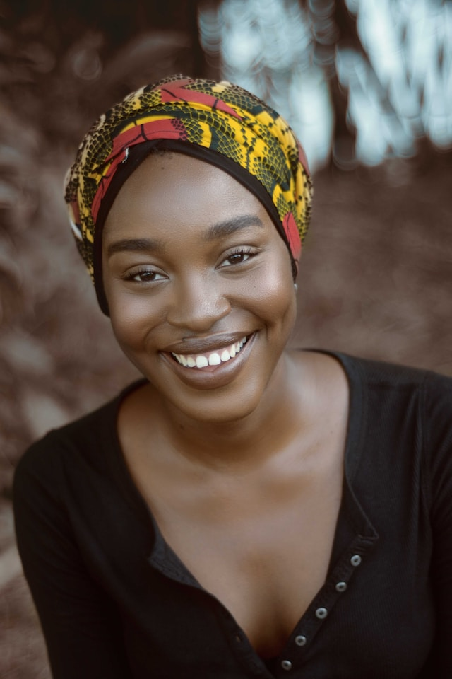

GALLERY



Hello friend! I'm a photographer dedicated to capturing the essence of life through my lens. With a deep passion for storytelling and a keen eye for detail, I strive to freeze moments in time and create visual masterpieces that resonate with emotions. Every click of the shutter is an opportunity for me to create a lasting memory, whether it's a breathtaking landscape, a candid portrait, or a cherished milestone. I believe that photography has the power to transcend words and convey emotions that words alone cannot capture. Drawing inspiration from the beauty that surrounds us, I aim to capture the unique stories that unfold before me. Through careful composition, lighting, and a touch of artistry, I transform ordinary scenes into extraordinary visual narratives. I find joy in the connections I make with my subjects, whether it's a couple exchanging vows, a family sharing laughter, or an artist immersed in their craft. It's through these connections that I am able to bring out the genuine moments and emotions that make each photograph truly special. I am constantly evolving as a photographer, embracing new techniques and experimenting with different styles. My goal is to create images that not only document moments but also evoke a sense of wonder, inspiration, and nostalgia. I consider it an honor to be entrusted with capturing the precious moments of people's lives, and I approach each project with dedication, professionalism, and a genuine love for my craft. Let's embark on this visual journey together and create memories that will be cherished for a lifetime.